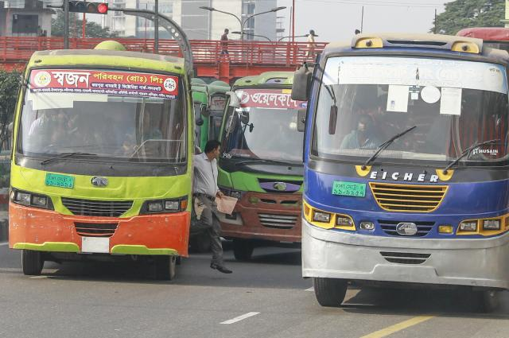

Breaking News


সড়ক দুর্ঘটনায় গত বছর নিহত ৩৬৭২
বাংলাদেশ প্রকৌশল বিশ্ববিদ্যালয়ের (বুয়েট) সড়ক ও দুর্ঘটনা গবেষণা ইনস্টিটিউট (এআরআই) বলছে, চলতি বছরের প্রথম ৯ মাসে (জানুয়ারি-সেপ্টেম্বর) বাংলাদেশে সড়ক দুর্ঘটনায় মারা গেছে ৩ হাজার ১১২ জন। আহত হয়েছে ৭ হাজার ৪০০ জন। যেখানে গত বছরও সড়ক দুর্ঘটনায় মারা গেছে ৩ হাজার ৬৭২ জন। বুয়েটের সড়ক ও দুর্ঘটনা গবেষণা ইনস্টিটিউটের সহকারী অধ্যাপক কাজী মো. শিফুন নেওয়াজ প্রথম আলোকে বলেন, দেশে সড়ক দুর্ঘটনা কমছে না। মহাসড়কগুলোতে ছোট গাড়ি চলার আলাদা কোনো লেন নেই। বড় গাড়ি, ছোট গাড়ি একসঙ্গে চলছে। সড়ক দুর্ঘটনা না কমার এটা অন্যতম কারণ। বুয়েটের সড়ক দুর্ঘটনা গবেষণা ইনস্টিটিউট বলছে, বাংলাদেশে ঢাকা-চট্টগ্রাম মহাসড়ক, ঢাকা-আরিচা মহাসড়ক, নগরবাড়ি-বাংলাবান্ধা মহাসড়ক, নগরবাড়ি-রাজশাহী মহাসড়ক, দৌলতদিয়া-ঝিনাইদহ-খুলনা মহাসড়কে, ঢাকা-মাওয়া-বরিশাল মহাসড়ক, ঢাকা-সিলেট মহাসড়ক, গাজীপুর-টাঙ্গাইল-জামালপুর মহাসড়কে এবং ঢাকা-ময়মনসিংহ মহাসড়কগুলোতে সড়ক দুর্ঘটনা তুলনামূলকভাবে বেশি হচ্ছে। বুয়েটের সড়ক ও দুর্ঘটনা ইনস্টিটিউটের গবেষণা প্রতিবেদন বলছে, ১৯৯৮ সাল থেকে ২০১৪ সাল পর্যন্ত বাংলাদেশে সড়ক দুর্ঘটনায় মারা গেছে ৪৫ হাজার ৯৪০ জন। গুরুতর আহত হয়েছে ২৭ হাজার ৯৩১ জন। ২০১৪ সালে সড়ক দুর্ঘটনায় মারা গেছে ১ হাজার ৬৩২ জন। আর ২০১৩ সালে ১ হাজার ৭৮২ জন, ২০১২ সালে ১ হাজার ৯৫৩ জন, ২০১১ সালে ২ হাজার ৭২ জন, ২০১০ সালে ২ হাজার ৪৪৩ জন মারা গেছে।
আইন মানতে যত অনীহা’

ট্রাফিক আইন ও সড়ক ব্যবস্থাপনায় শৃঙ্খলা কীভাবে আনতে হয়, তা চোখে আঙুল দিয়েই দেখিয়েছিল খুদে শিক্ষার্থীরা। লাইসেন্স, হেলমেটের ব্যবহার, লেন মেনে চলা থেকে পুরো সড়কের নিয়ন্ত্রণ ছিল ওদের হাতে। তবে শিক্ষার্থীদের সেই নিরাপদ সড়ক চাই আন্দোলনের পরও অসচেতনতা ও নিয়ম না মানার প্রবণতা এখনো কমেনি। গত ২৯ জুলাই রাজধানীর কুর্মিটোলা জেনারেল হাসপাতালের সামনে বিমানবন্দর সড়কে জাবালে নূর পরিবহন লিমিটেডের একটি বাসের চাপায় দুই শিক্ষার্থী নিহত হয়। আহত হয় বেশ কয়েকজন। ওই ঘটনার প্রতিবাদে সারা দেশের স্কুল–কলেজের শিক্ষার্থীরা সড়কে নেমে বিক্ষোভ করে। নড়েচড়ে বসতে বাধ্য হয় প্রশাসন। এরপর রাজধানীতে ট্রাফিক সপ্তাহের সময় বাড়িয়ে তা সেপ্টেম্বর মাস পর্যন্ত চলে। সড়কে ট্রাফিক পুলিশের সঙ্গে রোভার স্কাউট, বিএনসিসিসহ বিভিন্ন স্বেচ্ছাসেবক বাহিনীর সদস্যরা সড়কে শৃঙ্খলা রক্ষায় কাজ করে। আগস্ট ও সেপ্টেম্বর মাসে রাজধানীতে ট্রাফিক আইন অমান্যকারীদের বিরুদ্ধে মামলা হয়েছে আড়াই লাখের বেশি। জরিমানা আদায় হয়েছে প্রায় ১৭ কোটি টাকা। গত কয়েক দিনে রাজধানীর বিভিন্ন মোড়ে দেখা যায়, যানবাহনের এলোমেলো চলাচল, পদচারী–সেতু ব্যবহারে অনীহাসহ নানান অনিয়ম এখনো চলছে সড়কে। রাজধানীর বাংলামোটর মোড়ে একটি পদচারী–সেতু রয়েছে। সেখানে সুযোগ পেলেই পথচারীরা চলন্ত গাড়ির ফাঁকফোকর দিয়ে দৌড়ে সড়ক পার হচ্ছেন। শাহীন আহমেদ নামের এক পথচারীও এভাবে দৌড়ে পার হচ্ছিলেন। পদচারী–সেতু রেখে বা সিগন্যালের জন্য অপেক্ষা না করে ঝুঁকি নিয়ে পার হওয়ার ব্যাপারে জানতে চাইলে প্রথম আলোকে তিনি বলেন, তাড়া থাকার জন্য তিনি এভাবে পার হয়েছেন। আবার অনেকেই নিরাপদ পারাপারের জন্য পদচারী সেতুও ব্যবহার করেন। সেতু ব্যবহারকারী কেয়া আক্তার বলেন, ‘একটু কষ্ট হয়, সময় লাগে বেশি, কিন্তু সেইফ।’ পান্থপথের বসুন্ধরা সিটি শপিংমলের পাশে একটি পদচারী–সেতু আছে। তবে অনেকেরই তা নজর এড়িয়ে যায়। শপিং মলটিতে ঢোকার জন্য অনেকেই সড়ক দিয়ে পার হন। ঝুঁকির পাশাপাশি এই সড়কে চলাচলকারী যানবাহনগুলো গতি কম রাখতেও বাধ্য হয়। এভাবে পার হওয়া নিয়ে জানতে চাইলে কয়েকজন পথচারী জানান, তাঁদের ভুল হয়েছে বা তাড়া থাকায় এমনটা করেছেন। অনেক সড়কেই জেব্রা ক্রসিং রয়েছে। তবে এর ব্যবহার এখনো ঠিকমতো হয় না। গাড়িগুলো বেশির ভাগই ক্রসিংয়ের ওপর বা ক্রসিং পার হয়ে সামনে গিয়ে দাঁড়ায়। কোনো পথচারী সিগন্যালের সময় ক্রসিং দিয়ে পার হতে চাইলেও তা সম্ভব হয় না। বাংলামোটরে ক্রসিং পার হয়ে সামনে দাঁড়ানো এক সিএনজিচালক জানান, ক্রসিংয়ের নিয়ম তিনি জানেন, কিন্তু দ্রুত চলে আসায় ক্রসিং পার হয়ে গিয়েছেন। তবে দায়িত্বরত ট্রাফিক পুলিশের সদস্যরা এখন চেষ্টা করেন, গাড়িগুলোকে ক্রসিংয়ের নির্দিষ্ট দাগের পেছনে দাঁড়াতে। তবে ট্রাফিক পুলিশের সদস্যরা জানান, এ ক্ষেত্রে মোটরসাইকেলগুলো সহজে ক্রসিংয়ের নিয়ম মানতে চায় না। রাজধানীর সিগন্যালে বাতিগুলো অকেজো রয়েছে দীর্ঘদিন। হাতের ইশারা ও রশি বেঁধে যানবাহন নিয়ন্ত্রণ করা হয়। রাজধানীর সড়কগুলোতে নতুন করে বাস স্টপেজ লেখা সাইনবোর্ড টানানো হয়েছে। এ ছাড়া সড়কের ওপর সাদা–হলুদ রঙে বাস থামানোর সংকেত–সংবলিত দাগও দেওয়া হয়েছে। তবে নির্দিষ্ট জায়গা করে দিলেও বাস সেখানে থামে না। পাল্লা দিয়ে ও চলন্ত অবস্থায় যাত্রী তোলার অভ্যাস এখনো যায়নি।
মুক্তিযোদ্ধা কোটা পুনর্বহালের দাবিতে বুধবার সমাবেশ
সরকারি চাকরিতে ৩০ শতাংশ মুক্তিযোদ্ধা কোটা পুনর্বহাল করাসহ ১১ দফা দাবিতে বুধবার (২৫ অক্টোবর) রাজধানীর শাহবাগে দিনব্যাপী অবস্থান নিয়ে সমাবেশ করবে মুক্তিযুদ্ধ মঞ্চ। একই দাবিতে ৩০ অক্টোবর প্রধানমন্ত্রী শেখ হাসিনার কাছে স্মারকলিপি দেবে সংগঠন। রোববার বিকেলে কেন্দ্রীয় শহীদ মিনারে আয়োজিত এক সমাবেশে মঞ্চের আহ্বায়ক ও ঢাকা বিশ্ববিদ্যালয়ের অধ্যাপক আ ক ম জামাল উদ্দিন এই কর্মসূচির ঘোষণা দেন৷ এতে দুই শতাধিক মুক্তিযোদ্ধার সন্তান ও বেশ কয়েকজন মুক্তিযোদ্ধা উপস্থিত ছিলেন। সরকারি চাকরিতে কোটা বাতিলের পর মুক্তিযোদ্ধা কোটা পুনর্বহালের দাবিতে মুক্তিযুদ্ধ মঞ্চ নামে এই সংগঠনটির যাত্রা শুরু হয়। সমাবেশে প্রধান অতিথি হিসেবে বক্তব্যে দেন মুক্তিযোদ্ধা সংসদ কেন্দ্রীয় কমান্ড কাউন্সিলের চেয়ারম্যান মেজর জেনারেল (অব.) হেলাল মোর্শেদ খান। তিনি বলেন, পরে আরও বড় আকারে সমাবেশ করা হবে। সমাবেশে আরও বক্তব্য দেন ঢাকা বিশ্ববিদ্যালয়ের দর্শন বিভাগের অধ্যাপক আবু জাফর মোহাম্মদ সালেহ, মুক্তিযোদ্ধা সংসদ কেন্দ্রীয় কমান্ড কাউন্সিলের মহাসচিব (প্রশাসন) এমদাদ হোসেন মতিন, মুক্তিযুদ্ধ মঞ্চের সদস্যসচিব আসিবুর রহমান খান, বাংলাদেশ সড়ক পরিবহন শ্রমিক ফেডারেশনের সাধারণ সম্পাদক ও মুক্তিযুদ্ধের চেতনা মঞ্চের সদস্যসচিব ওসমান আলী, মুক্তিযোদ্ধা সংসদ কেন্দ্রীয় কমান্ড কাউন্সিলের ভাইস চেয়ারম্যান ইসমত কাদির গামা, ঢাকা বিশ্ববিদ্যালয় ছাত্রলীগের সাবেক সাধারণ সম্পাদক ওমর শরীফ প্রমুখ। মুক্তিযুদ্ধ মঞ্চের অন্যান্য দাবির মধ্যে রয়েছে, যুদ্ধাপরাধী ও স্বাধীনতাবিরোধীদের সন্তান ও তাদের উত্তরসূরিদের সরকারি চাকরিতে নিয়োগ বন্ধ করা, যুদ্ধাপরাধী ও স্বাধীনতাবিরোধী যারা সরকারি চাকরিতে বহাল আছে তাদের তালিকা করে বরখাস্ত করা, চাকরিতে প্রবেশের সর্বোচ্চ বয়স ৩৫ করাসহ ইত্যাদি।
© All Rights Reserved
Prothom Alo 1998 - 2018
Editor & publisher: Matiur Rahman.
CA Bhaban, 100 Kazi Nazrul Islam avenue, Karwan Bazar, Dhaka 1215
Phone: 8180078-81, Fax: 9130496, E-mail: info@prothom-alo.info
Reproduction of any content,
news or article published on this website is
strictly prohibited.Privacy